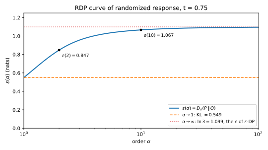
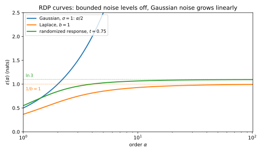
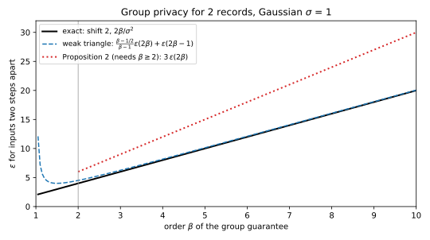
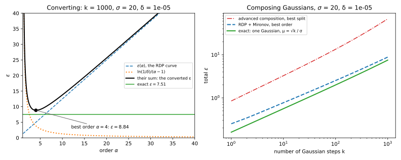

29 Rényi differential privacy
29.1 Why this matters
You train a model with 1000 steps of full-batch noisy gradient descent. Each step computes a quantity whose sensitivity is 1, meaning that changing one person’s record moves it by at most 1, and releases it with Gaussian noise whose standard deviation is \(\sigma = 20\) times that sensitivity; \(\sigma\) is the noise multiplier. What is the total differential privacy (DP) guarantee at \(\delta = 10^{-5}\)? Recall what such a guarantee says: a mechanism is \((\varepsilon, \delta)\)-DP if, for any two neighbouring datasets (datasets that differ in one person’s record) and any set of outputs, the probability of that set under one dataset is at most \(e^\varepsilon\) times its probability under the other, plus a small slack \(\delta\).
Part 3 gives one answer. Turn each step into a single guarantee \((\varepsilon_0, \delta_0)\), then apply advanced composition (Composition), the theorem that says \(k\) such steps cost roughly \(\varepsilon_0\sqrt{k}\) rather than \(k\varepsilon_0\). With the best split of \(\delta\) between the steps and the final tail, over the grid of splits Part 3 searches, that gives \(\varepsilon = 68.01\). The true answer is \(\varepsilon = 7.51\). You can compute it exactly because 1000 Gaussian steps behave like one Gaussian mechanism with noise \(\sigma/\sqrt{1000}\): the 1000 shifts of 1 form a vector of Euclidean length \(\sqrt{1000}\), and a Gaussian with shift \(\sqrt{1000}\) and noise \(\sigma\) is the same as one with shift 1 and noise \(\sigma/\sqrt{1000}\). The bound is nine times too large (\(68.01/7.51 \approx 9\)).
The loss comes from the very first move. A Gaussian step does not have one \((\varepsilon_0, \delta_0)\). For each \(\varepsilon_0\) there is a smallest \(\delta_0\) that works, so it has a whole curve of valid pairs, its privacy curve. Collapsing the curve to a single point throws away the information about how the step behaves at every other point, and that is exactly the information composition needs. After that, no composition theorem can recover it.
29.1.1 The one idea: track a curve that adds
Rényi differential privacy (RDP) keeps a whole curve instead of a point, and it chooses a curve that is easy to compose. For each mechanism and each pair of neighbouring datasets, consider how much more likely an output is under one dataset than under the other. RDP summarizes that likelihood ratio by its moments: for each order \(\alpha > 1\) it records the Rényi divergence \(D_\alpha\) between the two output distributions, which is, up to a logarithm and a factor \(1/(\alpha - 1)\), the average of the likelihood ratio raised to the power \(\alpha\) (the Toolkit below restates it). Taking the worst pair of neighbours at each order gives a function \(\alpha \mapsto \varepsilon(\alpha)\), the RDP curve.
Two facts make this curve the workhorse of privacy accounting. First, curves add under composition. When you run several mechanisms in sequence, even when each is chosen after seeing the earlier outputs, the curve of the whole run is at most the pointwise sum of their curves, with equality for independent steps. The reason is that a moment of a product of independent likelihood ratios is a product of moments, and the logarithm turns that product into a sum. No \(\delta\) is spent along the way. Second, any point of the curve converts to an \((\varepsilon, \delta)\) guarantee at the end. The conversion is a Chernoff bound, Markov’s inequality applied to an exponential, which turns a bound on a moment of the privacy loss into a bound on how often the loss is large. So you compose curves, and choose the best order once, after composing.
For the 1000 Gaussian steps, adding curves and converting once gives \(\varepsilon = 8.84\), 18% above the exact 7.51 (\(8.84/7.51 = 1.177\)). The same bookkeeping, under the name moments accountant, is what made differentially private deep learning practical.
Table 29.1 lists the results of this chapter and where each is used.
| Result | Where it is used |
|---|---|
| Definition of \((\alpha, \varepsilon)\)-RDP; limits \(\alpha \to 1\) and \(\alpha \to \infty\) | Every accountant in this part; \(\varepsilon\)-DP is the point \(\alpha = \infty\) |
| RDP curves of the Gaussian, Laplace and randomized response mechanisms | The inputs to every accountant; the Gaussian curve is the base of accounting for differentially private stochastic gradient descent (SGD), DP-SGD for short |
| Composition adds curves | Accounting for thousands of training steps in one line |
| Post-processing; weak group privacy | Releasing models and predictions; correlated records |
| The moments accountant is RDP | Reading Abadi et al. (2016) and the libraries built on it |
| Conversion RDP \(\Rightarrow (\varepsilon, \delta)\) | Reporting a guarantee; From RDP to (ε, δ) and to tests sharpens it |
What you need. The Rényi divergence, its limits, its monotonicity in \(\alpha\) and the data-processing inequality are in Divergences (Section 3.4, Section 3.10). The Chernoff method is in Concentration. From Part 3 you need the definition of DP (Definition), the Laplace and Gaussian mechanisms (Laplace and Gaussian mechanisms), randomized response (Definition, Section 18.5) and the privacy loss random variable (Composition). The Toolkit restates the facts this chapter uses, and each mechanism is restated where it first appears.
Notation. \(M\) is a mechanism and \(D \simeq D'\) are neighbouring datasets. \(P = M(D)\) and \(Q = M(D')\) are the output distributions, with densities (or probability mass functions) \(p\) and \(q\). The privacy loss at output \(y\) is \(L(y) = \ln\frac{p(y)}{q(y)}\), the log of how much more likely \(y\) is under \(D\) than under \(D'\): positive when \(y\) points to \(D\), negative when it points to \(D'\). The privacy loss random variable is \(L(Y)\) with \(Y \sim P\), the loss of an output actually drawn from the mechanism on \(D\). The Gaussian mechanism adds \(\mathcal N(0, \sigma^2\Delta_2^2)\) noise to a query of \(\ell_2\)-sensitivity \(\Delta_2\) (the largest Euclidean distance between the query’s answers on neighbours), so \(\sigma\) is the noise multiplier. Logarithms are natural. Whenever this part optimizes over the order, it uses the same grid of orders: 99 orders from 1.1 to 10.9 in steps of 0.1, the 52 integers from 12 to 63, and 128, 256 and 512, which is \(99 + 52 + 3 = 154\) orders from 1.1 to 512:
ORDERS = [1 + x / 10 for x in range(1, 100)] + list(range(12, 64)) + [128, 256, 512]29.2 Toolkit: four facts from Part 1
Every derivation below reuses four facts about the Rényi divergence of order \(\alpha > 1\). They are proved in Divergences and Concentration; each is restated here with the short reason it holds. Throughout, \(r = p/q\) is the likelihood ratio, how many times more likely an output is under \(P\) than under \(Q\), and \(L = \ln r\) is the privacy loss.
29.2.1 Fact 1 — A moment of the likelihood ratio
The Rényi divergence of order \(\alpha\) is defined as \[D_\alpha(P\|Q) = \frac{1}{\alpha - 1}\ln\int p^\alpha q^{1-\alpha}\,dy. \tag{29.1}\] The integral inside is an average of a power of the likelihood ratio, and you can take that average under either distribution. Multiply both sides of the definition by \(\alpha - 1\) and exponentiate: \[e^{(\alpha - 1)D_\alpha(P\|Q)} = \int p^\alpha q^{1-\alpha}\,dy = \mathbb E_Q\big[r^\alpha\big] = \mathbb E_P\big[r^{\alpha - 1}\big] = \mathbb E_P\big[e^{(\alpha - 1)L}\big]. \tag{29.2}\] The first equality after the integral holds because \(p^\alpha q^{1-\alpha} = q\,(p/q)^\alpha\), and integrating \(q\) times something is averaging that something under \(Q\). The next one is the change of measure \(\mathbb E_P[g] = \mathbb E_Q[r g]\), which holds because \(\int p\,g = \int q\,(p/q)\,g\): an average under \(P\) is an average under \(Q\) with each output reweighted by its likelihood ratio. Applied with \(g = r^{\alpha - 1}\), it turns \(\mathbb E_Q[r \cdot r^{\alpha-1}]\) into \(\mathbb E_P[r^{\alpha-1}]\). The last form uses \(r^{\alpha - 1} = e^{(\alpha - 1)L}\). It says that \((\alpha - 1)D_\alpha\) is the logarithm of the moment generating function (MGF) of \(L\) under \(P\), the function \(\lambda \mapsto \mathbb E_P[e^{\lambda L}]\), evaluated at \(\lambda = \alpha - 1\) (Equation 3.12). That is why a Rényi divergence is a statement about the exponential moments of the privacy loss.
29.2.2 Fact 2 — Limits and monotonicity
\(D_\alpha\) is non-decreasing in \(\alpha\). As \(\alpha \to 1\) it tends to the Kullback–Leibler (KL) divergence \(\mathbb E_P[L]\), the average privacy loss, and as \(\alpha \to \infty\) it tends to the max-divergence \(D_\infty = \sup_y L(y)\), the largest privacy loss of any output.
The reason is a picture. Write \(\psi(\lambda) = \ln\mathbb E_P[e^{\lambda L}]\), the log-MGF of Fact 1. It passes through the origin, since \(\psi(0) = \ln 1 = 0\), and it is convex, as every log-MGF is. By Fact 1, \(D_\alpha = \psi(\alpha - 1)/(\alpha - 1)\), the slope of the chord of \(\psi\) from the origin to the point at \(\lambda = \alpha - 1\). Chords of a convex function from a fixed point get steeper as their far end moves right, so \(D_\alpha\) grows with \(\alpha\). As \(\alpha \to 1\) the chord shrinks to the tangent at 0, whose slope is \(\psi'(0) = \mathbb E_P[L]\), the KL divergence. As \(\alpha \to \infty\), \(D_\alpha\) is the log of \(\big(\mathbb E_P[r^{\alpha - 1}]\big)^{1/(\alpha-1)}\), a power mean of \(r\) with a growing exponent, and such a mean is pulled toward the largest value of \(r\); its logarithm tends to \(\sup_y L(y)\).
29.2.3 Fact 3 — Data processing
Processing the output cannot make two distributions easier to tell apart. For any channel \(K\), a randomized map applied to the output that does not depend on which distribution produced it, \(D_\alpha(PK\|QK) \le D_\alpha(P\|Q)\), for every \(\alpha\) including \(\infty\) (Section 3.10). Here \(PK\) is the distribution of the processed output when the input is drawn from \(P\). The idea is that the likelihood ratio of a processed output is an average of the ratios of the original outputs that could have produced it, and averaging pulls ratios toward each other. Since \(x \mapsto x^\alpha\) is convex for \(\alpha > 1\), Jensen’s inequality (the power of an average is at most the average of the powers) says that averaging can only lower the moment \(\mathbb E_Q[r^\alpha]\), and with it \(D_\alpha\).
29.2.4 Fact 4 — Markov on an exponential (the Chernoff method)
For any random variable \(X\), any \(c\) and any \(\lambda > 0\), \[\Pr[X \ge c] \le e^{-\lambda c}\,\mathbb E\big[e^{\lambda X}\big]. \tag{29.3}\] The reason is one line. On the event \(X \ge c\) the non-negative quantity \(e^{\lambda X}\) is at least \(e^{\lambda c}\), so its average is at least \(e^{\lambda c}\Pr[X \ge c]\); divide by \(e^{\lambda c}\). This is how an exponential moment, which is what a Rényi divergence controls, becomes a bound on a tail probability.
29.3 Rényi differential privacy
29.3.1 Context
\(\varepsilon\)-DP bounds the privacy loss \(L(y)\) at every output. That is a statement about the maximum of \(L\), which is the max-divergence. \((\varepsilon, \delta)\)-DP allows the bound to be exceeded on outputs carrying a small amount of probability mass, measured by \(\delta\). Both summarize the distribution of the privacy loss by one point of its upper tail. The Rényi divergence of order \(\alpha\) summarizes it differently, by an exponential moment \(\mathbb E_P[e^{(\alpha - 1)L}]\) (Fact 1). An exponential moment weights large losses more heavily than small ones, and the larger the order, the more heavily. So small orders look at the typical loss and large orders at the worst case (Fact 2). Requiring a bound at every order describes the whole upper tail of the loss, not one point of it.
29.3.2 Statement
The definition asks for the same bound on the Rényi divergence for every pair of neighbours. A mechanism \(M\) is \((\alpha, \varepsilon)\)-RDP, for an order \(\alpha > 1\), if for all neighbouring datasets \(D \simeq D'\) \[D_\alpha\big(M(D)\,\|\,M(D')\big) \le \varepsilon. \tag{29.4}\] The RDP curve of \(M\) records, at each order, the smallest \(\varepsilon\) that works, which is the divergence of the worst pair of neighbours: \[\varepsilon_M(\alpha) = \sup_{D \simeq D'} D_\alpha\big(M(D)\,\|\,M(D')\big). \tag{29.5}\] The curve has three properties, which tie its two ends to familiar quantities.
- \(\alpha = \infty\) is pure DP. \(M\) is \(\varepsilon\)-DP if and only if \(\varepsilon_M(\infty) \le \varepsilon\).
- Monotone. \(\varepsilon_M(\alpha)\) is non-decreasing in \(\alpha\). So an \(\varepsilon\)-DP mechanism is \((\alpha, \varepsilon)\)-RDP at every order.
- \(\alpha \to 1\) is KL. As \(\alpha \to 1\), \(\varepsilon_M(\alpha)\) tends to a limit at least the largest KL divergence between neighbours, with equality for every mechanism in this chapter.
29.3.3 Derivation
- Pure DP is the max-divergence. \(\varepsilon\)-DP says \(P(S) \le e^\varepsilon Q(S)\) for every event \(S\), that is, \(\ln\frac{P(S)}{Q(S)} \le \varepsilon\). The largest value of that log ratio over events equals the largest privacy loss of a single output, which is the event form of the max-divergence (Section 3.4). The reason: \(\frac{P(S)}{Q(S)} = \frac{\int_S q\,r}{\int_S q}\) is an average of the likelihood ratio \(r\) over the outputs in \(S\), weighted by \(q\), so it can never exceed the largest \(r\), and an event concentrated on the outputs where \(r\) is largest comes as close to it as you like. So \(\sup_S \ln\frac{P(S)}{Q(S)} = D_\infty(P\|Q)\), and \(\varepsilon\)-DP holds exactly when \(D_\infty(M(D)\|M(D')) \le \varepsilon\) for all neighbours, that is, when \(\varepsilon_M(\infty) \le \varepsilon\).
- Monotonicity passes through the supremum. For each pair, \(D_\alpha\) is non-decreasing in \(\alpha\) (Fact 2). A supremum of non-decreasing functions is non-decreasing, because if every function in the family is larger at \(\alpha'\) than at \(\alpha\), so is the largest of them. Combined with step 1, \(\varepsilon_M(\alpha) \le \varepsilon_M(\infty) \le \varepsilon\) for an \(\varepsilon\)-DP mechanism.
- The KL limit. For each pair, \(D_\alpha \ge \mathrm{KL}\) and \(D_\alpha \to \mathrm{KL}\) as \(\alpha \to 1\) (Fact 2). So \(\varepsilon_M(\alpha) \ge \sup_{D \simeq D'}\mathrm{KL}\) at every order, and the limit is at least the largest KL. Equality would need the limit and the supremum to commute, which can fail in general: each pair’s divergence could approach its KL at a different speed. For the mechanisms below the curves are explicit, and you can check the limit directly.
29.3.4 Interpretation
An RDP guarantee is a curve, not a number. “Randomized response with \(p = 0.75\) is \((2, 0.8473)\)-RDP” (from the example below) is one point of it. What accountants store is the curve on a grid of orders. Each point is a valid guarantee, and different orders serve different purposes: composition works at every order at once, and the conversion to \((\varepsilon, \delta)\) picks the best order at the end.
The curve sits between the average case and the worst case. As \(\alpha \to 1\) it sees only the average loss, the KL divergence. A mechanism whose loss is usually small but occasionally large has a small KL divergence, because the rare large losses barely move the average, but large high-order divergences, because a high exponential moment is dominated by those rare large losses. So it is caught at large orders. Pure DP, at \(\alpha = \infty\), is the most demanding point of the curve.
Why only \(\alpha > 1\)? Orders below 1 exist as divergences, but they are not used for privacy. The conversion to \((\varepsilon, \delta)\) applies the Chernoff method to the loss, which needs an exponential moment \(\mathbb E_P[e^{\lambda L}]\) with \(\lambda = \alpha - 1 > 0\), and only orders above 1 provide one (Section 29.8).
29.3.5 Example: randomized response, outcome by outcome
Randomized response reports one person’s bit truthfully with probability \(p > \frac12\), the keep-probability, and flips it otherwise. The two neighbouring inputs are the two values of the bit. Take \(p = 0.75\). The likelihood ratio of any output is \(0.75/0.25 = 3\) or its inverse, so the mechanism is \(\varepsilon\)-DP with \(\varepsilon = \ln\frac{p}{1-p} = \ln 3\). Table 29.2 lists the outputs when the true bit is 1 (\(P\)) and 0 (\(Q\)).
| Output \(y\) | \(p(y)\) (bit is 1) | \(q(y)\) (bit is 0) | \(r(y)\) | \(L(y)\) | \(p(y)^2/q(y)\) |
|---|---|---|---|---|---|
| 1 | 0.75 | 0.25 | 3 | 1.0986 | 2.2500 |
| 0 | 0.25 | 0.75 | 1/3 | −1.0986 | 0.0833 |
At order 2, Fact 1 says \(e^{(2-1)D_2}\) is the sum of \(p(y)^2q(y)^{-1}\) over the outputs, which is the last column: \(e^{D_2} = 2.2500 + 0.0833 = 2.3333\), so \(\varepsilon(2) = \ln 2.3333 = 0.8473\). The same recipe works at any order: sum \(p(y)^\alpha q(y)^{1-\alpha}\) over the two outputs, take the logarithm, and divide by \(\alpha - 1\). The output 1 contributes \(p^\alpha(1-p)^{1-\alpha}\) and the output 0 contributes \((1-p)^\alpha p^{1-\alpha}\), so \[\varepsilon(\alpha) = \frac{1}{\alpha - 1}\ln\Big(p^\alpha(1-p)^{1-\alpha} + (1-p)^\alpha p^{1-\alpha}\Big). \tag{29.6}\] Swapping the roles of the bits swaps the two rows of the table and gives the same sum, so both directions of the pair have the same curve. Table 29.3 gives it at a few orders.
| \(\alpha\) | 1 (KL) | 1.5 | 2 | 5 | 10 | 64 | \(\infty\) |
|---|---|---|---|---|---|---|---|
| \(\varepsilon(\alpha)\) | 0.5493 | 0.7340 | 0.8473 | 1.0267 | 1.0666 | 1.0940 | 1.0986 |
The curve rises from the KL value to the pure DP level (Figure 29.1). The KL value is the average loss under \(P\): the loss is \(\ln 3\) with probability 0.75 and \(-\ln 3\) with probability 0.25, so \(\mathbb E_P[L] = (0.75 - 0.25)\ln 3 = 0.5\ln 3 = 0.5493\). The pure DP level is the largest loss, \(\ln 3 = 1.0986\). The script also evaluates the formula at \(\alpha = 1.0001\) (0.5494) and \(\alpha = 1000\) (1.0983), approaching both ends. Randomized response is already a pure DP mechanism, so here the curve says little that \(\ln 3\) did not. The curve matters most for mechanisms whose \(D_\infty\) is large or infinite.

29.3.6 Check yourself
- A mechanism is \((\alpha, \varepsilon)\)-RDP. Is it \((\alpha', \varepsilon)\)-RDP for \(\alpha' < \alpha\)? For \(\alpha' > \alpha\)? (For \(\alpha' < \alpha\) yes, by monotonicity: the curve at \(\alpha'\) is at most the curve at \(\alpha\). For \(\alpha' > \alpha\) not in general: the curve can keep rising, as the Gaussian’s does.)
- Why is \(\varepsilon(\alpha)\) for randomized response the same in both directions of the pair? (Swapping the bit swaps \(p(y)\) and \(q(y)\) between the two outputs, and the sum \(p^\alpha q^{1-\alpha}\) over both outputs is unchanged.)
29.4 RDP curves of the basic mechanisms
29.4.1 Context
To account for a mechanism you need its curve. For a mechanism that adds noise to a query’s answer, the two outputs on neighbours are the same noise distribution centred at two different answers. So the curve comes from the Rényi divergence between the noise distribution and a shifted copy of itself, which Part 1 computed for the normal and the Laplace distributions. The only new step is the supremum over neighbours: you need to know which pair of neighbouring inputs is the worst, and for these mechanisms it is the pair whose answers are furthest apart.
29.4.2 Statement
With sensitivity 1, the three curves are as follows. The Gaussian mechanism adds normal noise with standard deviation \(\sigma\) (the noise multiplier). The Laplace mechanism adds noise from the Laplace distribution with scale \(b\), whose density \(\frac{1}{2b}e^{-|y|/b}\) falls off exponentially on both sides. Randomized response has keep-probability \(p\). The Gaussian curve is a straight line in \(\alpha\), the Laplace curve is the Part 1 formula for a shift of one scale unit \(1/b\), and the randomized response curve is the sum over two outputs from the previous section: \[\text{Gaussian:}\quad \varepsilon(\alpha) = \frac{\alpha}{2\sigma^2}, \tag{29.7}\] \[\text{Laplace:}\quad \varepsilon(\alpha) = \frac{1}{\alpha - 1}\ln\left(\frac{\alpha}{2\alpha - 1}e^{(\alpha - 1)/b} + \frac{\alpha - 1}{2\alpha - 1}e^{-\alpha/b}\right), \tag{29.8}\] \[\text{randomized response:}\quad \varepsilon(\alpha) = \frac{1}{\alpha - 1}\ln\Big(p^\alpha(1-p)^{1-\alpha} + (1-p)^\alpha p^{1-\alpha}\Big). \tag{29.9}\] These are Corollaries 3 and 2 and the randomized response entry of Table 2 in Mironov (2017). The Laplace formula is for a real-valued query. Section B.4 in the appendices derives the Gaussian curve by completing the square.
29.4.3 Derivation
Gaussian. The plan is to reduce any pair of neighbours to two one-dimensional normals a distance \(s\) apart, use the Part 1 formula, and then take the largest \(s\).
- One pair. With \(\Delta_2 = 1\) the noise is \(\mathcal N(0, \sigma^2 I)\). On neighbours with answers \(f(D)\) and \(f(D')\), the outputs are \(\mathcal N(f(D), \sigma^2 I)\) and \(\mathcal N(f(D'), \sigma^2 I)\).
- Divergence of the pair. Translating and rotating the output space is a bijection, a relabelling of the outputs that can be undone, so it changes no divergence (apply Fact 3 in both directions). So you can move \(f(D)\) to 0 and \(f(D') - f(D)\) onto the first axis. The noise is the same in every direction, so after the rotation the two distributions differ only in the first coordinate; the other coordinates are identical, independent normals under both. Rényi divergence is additive over independent coordinates (Section 3.4), because the moment of Fact 1 factorizes into a product over coordinates, and identical coordinates contribute 0. What remains is the one-dimensional divergence \(D_\alpha(\mathcal N(0, \sigma^2)\|\mathcal N(s, \sigma^2)) = \alpha s^2/(2\sigma^2)\) (Equation 3.15), with \(s = \|f(D) - f(D')\|_2\). Part 1 derives it by noting that the privacy loss of a normal pair is itself normal, with mean \(s^2/(2\sigma^2)\) and variance \(s^2/\sigma^2\), and a normal variable’s log-MGF is known in closed form.
- Supremum. The divergence grows with \(s\), and \(s \le \Delta_2 = 1\) for neighbours. So the worst pair has \(s = 1\) and gives Equation 29.7. The script also integrates \(p^\alpha q^{1-\alpha}\) numerically and gets 1.0000 at \(\alpha = 2\) and 5.0000 at \(\alpha = 10\) for \(\sigma = 1\), matching \(2/2\) and \(10/2\).
Laplace. The plan is the same: reduce to a shift, use Part 1’s closed form, and show the worst shift is the largest.
- One pair. The outputs are \(\mathrm{Lap}(f(D), b)\) and \(\mathrm{Lap}(f(D'), b)\). After a translation, this is \(\mathrm{Lap}(0, b)\) against \(\mathrm{Lap}(s, b)\) with \(s = |f(D) - f(D')| \le 1\).
- Divergence of the pair. Part 1 computes it by splitting the integral \(\int p^\alpha q^{1-\alpha}\) at the two kinks of the densities, 0 and \(s\), where the absolute values change sign; on each of the three pieces the integrand is a plain exponential (Equation 3.19). With \(t = s/b\), the shift in units of the scale, the result is the formula above with \(1/b\) replaced by \(t\).
- Supremum. You need the divergence to grow with the shift, so that the largest shift is the worst. Write the argument of the logarithm as \(g(t) = \frac{\alpha}{2\alpha - 1}e^{(\alpha - 1)t} + \frac{\alpha - 1}{2\alpha - 1}e^{-\alpha t}\). Its derivative is \(g'(t) = \frac{\alpha(\alpha - 1)}{2\alpha - 1}\big(e^{(\alpha - 1)t} - e^{-\alpha t}\big)\), which is positive for \(t > 0\) because the first exponent is positive and the second negative. So \(\ln g(t)/(\alpha - 1)\) increases with \(t\). The reverse direction, \(\mathrm{Lap}(s, b)\) against \(\mathrm{Lap}(0, b)\), gives the same value, because the reflection \(y \mapsto s - y\) swaps the two distributions and changes no divergence. So the worst pair has \(s = 1\), \(t = 1/b\), and gives Equation 29.8.
- Numerical check. The script integrates \(p^\alpha q^{1-\alpha}\) on a grid of step \(10^{-4}\), with both kinks as grid points. For \(b \in \{0.5, 1, 4\}\) and \(\alpha \in \{1.5, 2, 10, 64\}\), the largest difference from Equation 29.8 is \(1.3 \times 10^{-8}\).
Randomized response. There is only one pair of inputs, the two values of the bit, so no supremum is needed, and Table 29.2 is its distribution. Fact 1 sums \(p^\alpha q^{1-\alpha}\) over the two outputs, as in the previous section.
29.4.4 Interpretation
Figure 29.2 draws the three curves. Two shapes appear, and which one you get depends on whether the privacy loss is bounded.
When the privacy loss is bounded, the curve levels off. For randomized response the loss is \(\pm\ln 3\). For Laplace the loss at \(y\) is \((|y - 1| - |y|)/b\), and by the triangle inequality \(\big||y - 1| - |y|\big| \le 1\), so \(|L| \le 1/b\). Since every \(D_\alpha\) is at most \(D_\infty\), the largest loss (Fact 2), the curves rise towards \(1/b\) and \(\ln 3\) and stay below them. For large \(\alpha\) you can see the approach. The first term of Equation 29.8 dominates, because \(e^{(\alpha - 1)/b}\) grows while \(e^{-\alpha/b}\) shrinks. Keeping only it, the logarithm splits as \(\ln\frac{\alpha}{2\alpha - 1} + \frac{\alpha - 1}{b}\), and dividing by \(\alpha - 1\) gives \(\varepsilon(\alpha) \approx \frac1b + \frac{1}{\alpha - 1}\ln\frac{\alpha}{2\alpha - 1}\). As \(\alpha\) grows, \(\frac{\alpha}{2\alpha - 1}\) tends to \(\frac12\), so \(\varepsilon(\alpha) \approx \frac1b - \frac{\ln 2}{\alpha - 1}\): the curve approaches \(1/b\) from below at rate \(1/(\alpha - 1)\). At \(\alpha = 512\) and \(b = 1\), both the formula and this approximation give 0.9986.
When the privacy loss is unbounded, the curve grows linearly. The Gaussian privacy loss is a straight line in the output \(y\) (the squares in the two exponents cancel, leaving a linear term), so it has no maximum, and the curve \(\alpha/(2\sigma^2)\) grows without bound. The Gaussian mechanism is therefore not \(\varepsilon\)-DP for any \(\varepsilon\). It is still \((\alpha, \varepsilon)\)-RDP at every finite order, and that is all composition and conversion need.
The straight-line shape of the Gaussian curve has a meaning of its own. For a single pair, a curve of the form \(\rho\alpha\) means the privacy loss is exactly normal, \(\mathcal N(\rho, 2\rho)\). The reason is Fact 1: \((\alpha - 1)\varepsilon(\alpha)\) is the log-MGF of the loss at \(\lambda = \alpha - 1\), and with \(\varepsilon = \rho\alpha = \rho(\lambda + 1)\) it is \(\rho\lambda + \rho\lambda^2\). The log-MGF of a normal variable with mean \(m\) and variance \(v\) is \(m\lambda + v\lambda^2/2\), so this one has \(m = \rho\) and \(v = 2\rho\). Concentrated DP builds a definition on it.

29.4.5 Example: the three curves at a few orders
Table 29.4 gives the curves at four orders, from the script.
| Mechanism | \(\varepsilon(1.5)\) | \(\varepsilon(2)\) | \(\varepsilon(10)\) | \(\varepsilon(64)\) | \(\varepsilon(\infty)\) |
|---|---|---|---|---|---|
| Gaussian, \(\sigma = 1\) | 0.7500 | 1.0000 | 5.0000 | 32.0000 | \(\infty\) |
| Laplace, \(b = 1\) | 0.5129 | 0.6191 | 0.9287 | 0.9891 | 1 |
| Randomized response, \(p = 0.75\) | 0.7340 | 0.8473 | 1.0666 | 1.0940 | 1.0986 |
The Gaussian row is \(\alpha/2\), read off at each order. You can check the Laplace row by hand at order 2: the coefficients in Equation 29.8 are \(\frac{2}{3}\) and \(\frac13\), the prefactor \(1/(\alpha - 1)\) is 1, and with \(b = 1\) the curve is \(\ln\big(\frac23e + \frac13e^{-2}\big) = 0.6191\), the same number as in Part 1’s Laplace example. As \(\alpha \to 1\) the Laplace curve tends to the KL divergence \(1/b + e^{-1/b} - 1 = 0.3679\). You can see this from Equation 29.8: at \(\alpha = 1\) the argument of the logarithm is \(1\), and its derivative in \(\alpha\) there is \(\frac1b - 1 + e^{-1/b}\), so for \(\alpha\) near 1 the logarithm is about \((\alpha - 1)\) times that derivative, and dividing by \(\alpha - 1\) leaves the derivative. At \(b = 1\) it is \(1 + e^{-1} - 1 = e^{-1} = 0.3679\).
29.4.6 Check yourself
- What is the RDP curve of the Gaussian mechanism with \(\sigma = 2\) and sensitivity 1, and at which order is it 1? (\(\varepsilon(\alpha) = \alpha/(2 \cdot 2^2) = \alpha/8\), which equals 1 at \(\alpha = 8\).)
- For the Gaussian mechanism on a vector query, why does only the \(\ell_2\) sensitivity matter, and not the \(\ell_1\)? (The divergence between two isotropic normals depends only on the Euclidean distance between their means, by rotation invariance.)
29.5 Composition adds curves
29.5.1 Context
Training a model runs thousands of mechanisms, each chosen after seeing the outputs of the earlier ones. You need the curve of the whole run. For a product of independent distributions, Part 1 showed that Rényi divergences add: the moment of Fact 1 is an integral of a product, which splits into a product of integrals, and the logarithm turns the product into a sum. Adaptive composition is not a product of independent distributions, because the second mechanism depends on the first output. The chain rule below shows that the curves still add, as long as each step’s curve is bounded whatever the earlier outputs were.
29.5.2 Statement
Let \(M_1\) have RDP curve \(\varepsilon_1\). Let \(M_2(\cdot\,; y_1)\) be a mechanism chosen using the first output \(y_1\), whose RDP curve is at most \(\varepsilon_2\) for every \(y_1\). The adaptive composition releases both outputs, \(M(D) = (y_1, y_2)\), with \(y_1 \sim M_1(D)\) and \(y_2 \sim M_2(D; y_1)\). Its curve is at most the sum of the two curves: \[\varepsilon_M(\alpha) \le \varepsilon_1(\alpha) + \varepsilon_2(\alpha) \qquad\text{for every } \alpha > 1. \tag{29.10}\] By induction, treating the first \(k - 1\) steps as one mechanism, \(k\) adaptively chosen mechanisms have curve at most \(\sum_{i=1}^k \varepsilon_i(\alpha)\). This is Mironov (2017), Proposition 1. Section B.4 in the appendices derives it from scratch, and Section B.5 compares it with the other accountants on one mechanism.
29.5.3 Derivation
The idea is to write the order-\(\alpha\) moment of the pair of outputs as a double integral, bound the inner integral (over \(y_2\)) by the worst case of the second step, and recognise what is left as the moment of the first step. Fix neighbours \(D \simeq D'\) and an order \(\alpha > 1\). Write \(p_1, q_1\) for the densities of \(y_1\) under \(D\) and \(D'\), and \(p_2(\cdot \mid y_1), q_2(\cdot \mid y_1)\) for those of \(y_2\) given \(y_1\).
- Factor the joint densities. By the definition of the adaptive composition, \(y_1\) is drawn first and \(y_2\) is drawn given \(y_1\), so \(p(y_1, y_2) = p_1(y_1)\,p_2(y_2 \mid y_1)\), and the same for \(q\).
- Write the order-\(\alpha\) moment as a double integral (Fact 1): \[e^{(\alpha - 1)D_\alpha(P\|Q)} = \int\!\!\int p_1^\alpha q_1^{1-\alpha}\;p_2(y_2\mid y_1)^\alpha q_2(y_2\mid y_1)^{1-\alpha}\,dy_2\,dy_1. \tag{29.11}\] The integrand splits into a factor for \(y_1\) and a factor for \(y_2\) given \(y_1\), because a power of a product is the product of the powers.
- Do the inner integral first, with \(y_1\) fixed. It is \(e^{(\alpha - 1)D_\alpha(P_2(\cdot\mid y_1)\|Q_2(\cdot\mid y_1))}\), by Fact 1 again. For fixed \(y_1\), \(P_2(\cdot\mid y_1)\) and \(Q_2(\cdot\mid y_1)\) are the outputs of the mechanism \(M_2(\cdot\,; y_1)\) on \(D\) and \(D'\), so the divergence is at most \(\varepsilon_2(\alpha)\). Since \(\alpha - 1 > 0\), the exponential is increasing, and the inner integral is at most \(e^{(\alpha - 1)\varepsilon_2(\alpha)}\), whatever \(y_1\) is.
- The outer integral. Pull that constant out. What is left is \(\int p_1^\alpha q_1^{1-\alpha}\,dy_1\), which by Fact 1 is \(e^{(\alpha - 1)D_\alpha(P_1\|Q_1)} \le e^{(\alpha - 1)\varepsilon_1(\alpha)}\). So the double integral is at most \(e^{(\alpha - 1)\varepsilon_2(\alpha)}e^{(\alpha - 1)\varepsilon_1(\alpha)}\).
- Take logarithms and divide by \(\alpha - 1\). This gives \(D_\alpha(P\|Q) \le \varepsilon_1(\alpha) + \varepsilon_2(\alpha)\) for this pair. The right side does not depend on the pair, so the supremum over neighbours satisfies the same bound.
To see the steps on numbers, take an adaptive pair of randomized responses. The first step reports the bit with keep-probability 0.75. The second reports it again, with keep-probability 0.75 if the first output was 1 and 0.6 if it was 0. Table 29.5 lists the four joint outcomes when the true bit is 1 (\(P\)) and 0 (\(Q\)). Each joint probability is the first step’s probability times the second’s, as in step 1.
| \((y_1, y_2)\) | \(p(y_1, y_2)\) | \(q(y_1, y_2)\) | \(p^2/q\) |
|---|---|---|---|
| (1, 1) | \(0.75 \times 0.75 = 0.5625\) | \(0.25 \times 0.25 = 0.0625\) | 5.0625 |
| (1, 0) | \(0.75 \times 0.25 = 0.1875\) | \(0.25 \times 0.75 = 0.1875\) | 0.1875 |
| (0, 1) | \(0.25 \times 0.6 = 0.15\) | \(0.75 \times 0.4 = 0.3\) | 0.0750 |
| (0, 0) | \(0.25 \times 0.4 = 0.1\) | \(0.75 \times 0.6 = 0.45\) | 0.0222 |
The terms sum to 5.3472, so \(D_2 = \ln 5.3472 = 1.6766\). The bound adds the first step’s curve to the worst curve the second step can have. At order 2 the second step’s curve is \(\varepsilon_{0.75}(2) = 0.8473\) on the branch \(y_1 = 1\) and \(\varepsilon_{0.6}(2) = 0.1542\) on the branch \(y_1 = 0\), writing \(\varepsilon_p\) for the curve of randomized response with keep-probability \(p\). So the bound is \(\varepsilon_1(2) + \max\big(\varepsilon_{0.75}(2), \varepsilon_{0.6}(2)\big) = 0.8473 + \max(0.8473, 0.1542) = 1.6946\). The bound holds, and it is not tight here, because step 3 replaced the inner divergence by its worst case, 0.8473, on the branch \(y_1 = 0\) where it is really 0.1542. When the second step does not adapt (keep-probability 0.75 on both branches), the joint distribution is a product and \(D_2 = 1.6946\) exactly.
29.5.4 Interpretation
The bound is tight for products and exact for the Gaussian. When the mechanisms are independent, the inner divergence in step 3 is the same for every \(y_1\), so replacing it by its worst case loses nothing and the curves add exactly (additivity, Section 3.4). A sum of independent Gaussian steps is again Gaussian, so for Gaussian steps the composed curve is exactly the curve of a single mechanism.
This is why composition works for RDP and not for \((\varepsilon, \delta)\) directly. The order-\(\alpha\) moment is an integral of a product, so it factorizes over the steps, as step 2 used. The smallest \(\delta\) that works for a given \(\varepsilon\) is the hockey-stick divergence \(\delta(\varepsilon) = \int(p - e^\varepsilon q)_+\), the total probability by which \(P\) exceeds \(e^\varepsilon\) times \(Q\), where \((x)_+ = \max(x, 0)\). A positive part of a difference does not factorize over the steps. That is why composing \((\varepsilon, \delta)\) points needs a separate theorem with its own slack.
One condition remains. The mechanisms can be chosen adaptively, but each step’s curve bound \(\varepsilon_i\) must be fixed in advance; it must not depend on the data. When the budget itself is chosen on the fly, you need the filters and odometers of Adaptive composition.
29.5.5 Example: \(k\) Gaussian steps
With \(\sigma = 20\), each step has \(\varepsilon(\alpha) = \alpha/(2 \cdot 20^2) = \alpha/800\). After \(k\) steps, the curve is \(k\alpha/800\). Setting \(k\alpha/800 = \alpha/(2\sigma'^2)\) shows that this is the curve of one Gaussian step with noise multiplier \(\sigma' = 20/\sqrt k\):
- \(k = 10\): \(0.0125\,\alpha\), the curve of one Gaussian with \(\sigma = 6.3246\);
- \(k = 100\): \(0.1250\,\alpha\), one Gaussian with \(\sigma = 2.0000\);
- \(k = 1000\): \(1.2500\,\alpha\), one Gaussian with \(\sigma = 0.6325\).
In general, \(k\) Gaussian steps with noise multiplier \(\sigma\) have the curve of one Gaussian with noise multiplier \(\sigma/\sqrt k\). The function compose_rdp adds 1000 copies of the curve on the grid of orders and returns 2.5000 at \(\alpha = 2\), which is \(1000 \times 2/800\).
Different mechanisms compose just as easily, because their curves are added order by order. A Laplace step with \(b = 1\) followed by a Gaussian step with \(\sigma = 1\) has \(\varepsilon(2) = 0.6191 + 1 = 1.6191\) and \(\varepsilon(10) = 0.9287 + 5 = 5.9287\), reading both terms from Table 29.4.
Full-batch DP-SGD. The part’s running example runs 10,000 steps of DP-SGD with \(\sigma = 1\). If each step used the whole dataset, each would have the curve \(\alpha/2\), and the composed curve would be \(10{,}000\,\alpha/2 = 5000\,\alpha\). The converted guarantee at \(\delta = 10^{-5}\) would be \(\varepsilon = 5425.5\) even when computed exactly. That is no guarantee at all. With the conversion of Section 29.8, which adds a tail term \(\ln(1/\delta)/(\alpha - 1)\) with \(\ln(1/\delta) = 11.5129\), RDP on ORDERS gives \(5000 \times 1.1 + 11.5129/0.1 = 5615.1\) at \(\alpha = 1.1\), the lowest order of the grid. The continuous optimum (Equation 29.18 with the composed noise multiplier \(1/\sqrt{10{,}000} = 0.01\)) is \(\alpha^* = 1 + 0.01 \times 4.7985 = 1.048\), with \(5000 + 4.7985/0.01 = 5479.9\). A curve this steep needs orders just above 1. DP-SGD is private only because each step touches a random 1% of the data. Amplification by subsampling computes the curve of a subsampled step.
29.5.6 Check yourself
- Two mechanisms with curves \(\alpha/8\) and \(\alpha/2\) are composed. Which single Gaussian mechanism has the same curve? (The sum is \(5\alpha/8 = \alpha/(2\sigma^2)\) with \(\sigma^2 = 0.8\), so \(\sigma = 0.8944\).)
- In Table 29.5, where does the derivation lose \(1.6946 - 1.6766 = 0.0180\) nats? (In step 3, which bounds the inner divergence on the branch \(y_1 = 0\) by the worst case 0.8473, while the keep-probability 0.6 gives only 0.1542.)
29.6 Post-processing and group privacy
29.6.1 Context
Two properties of DP carry over to RDP. Post-processing matters because a released model or its predictions must not leak more than the training procedure that produced them. Group privacy matters because records are correlated: a family shares a household, and a user contributes many rows. For \(\varepsilon\)-DP, a group of \(k\) records gets \(k\varepsilon\) (Properties of DP), because the likelihood ratios along a chain of \(k\) neighbours multiply. For RDP the answer is weaker: the Rényi divergence does not satisfy a plain triangle inequality, so going through an intermediate dataset costs a higher order, and the order of the group guarantee must shrink as the group grows.
29.6.2 Statement
Post-processing. Applying any randomized map \(g\) that does not look at the data to the output cannot raise the curve: \(\varepsilon_{g\circ M}(\alpha) \le \varepsilon_M(\alpha)\) for every \(\alpha\).
Weak triangle inequality (Mironov 2017, Proposition 11). To bound the divergence from \(P\) to \(Q\) through an intermediate distribution \(R\), you pay with higher orders on the two legs, and the exponents \(u\) and \(v\) choose how the cost is split between them. For distributions \(P, R, Q\), an order \(\alpha > 1\) and exponents \(u, v > 1\) with \(\frac1u + \frac1v = 1\), \[D_\alpha(P\|Q) \le \frac{\alpha - 1/u}{\alpha - 1}D_{u\alpha}(P\|R) + D_{v(\alpha - 1) + 1}(R\|Q). \tag{29.12}\] The even split \(u = v = 2\) (Corollary 4 there) doubles the order on the first leg and nearly doubles it on the second: \[D_\alpha(P\|Q) \le \frac{\alpha - 1/2}{\alpha - 1}D_{2\alpha}(P\|R) + D_{2\alpha - 1}(R\|Q). \tag{29.13}\]
Group privacy (Mironov 2017, Proposition 2). If \(M\) is \((\alpha, \varepsilon)\)-RDP and \(\alpha \ge 2^{c+1}\), then on inputs that differ in \(2^c\) records \(M\) satisfies the RDP bound of order \(\alpha/2^c\) with \(\varepsilon\) replaced by \(3^c\varepsilon\).
29.6.3 Derivation
Post-processing. \(g \circ M(D)\) is \(M(D)\) passed through the channel \(g\), the same channel whichever dataset was used, so \(D_\alpha\) can only decrease (Fact 3). Take the supremum over neighbours. For a concrete case, pass the output of randomized response (\(p = 0.75\)) through a channel that flips it with probability 0.2. When the bit is 1, the final output is 1 if the first output was 1 and was kept, or was 0 and was flipped: \(0.75 \times 0.8 + 0.25 \times 0.2 = 0.65\). When the bit is 0, it is \(0.25 \times 0.8 + 0.75 \times 0.2 = 0.35\). The two outputs are now closer in probability, and \(D_2\) drops from 0.8473 to \(\ln\big(0.65^2/0.35 + 0.35^2/0.65\big) = 0.3333\), while \(D_\infty\) drops from 1.0986 to \(\ln(0.65/0.35) = 0.6190\).
Weak triangle inequality. The idea is to write the moment for \(P\) against \(Q\) as an average under \(R\) of a product of two likelihood ratios, \(p/r\) and \(r/q\), and then separate the two factors with Hölder’s inequality. Write \(p, r, q\) for the densities of \(P, R, Q\).
- Insert the middle distribution. Multiply and divide by powers of \(r\): since \((p/r)^\alpha (r/q)^{\alpha-1} r = p^\alpha r^{-\alpha + \alpha - 1 + 1} q^{1-\alpha} = p^\alpha q^{1-\alpha}\), Fact 1 gives \[e^{(\alpha - 1)D_\alpha(P\|Q)} = \int p^\alpha q^{1-\alpha} = \mathbb E_R\Big[\Big(\frac pr\Big)^\alpha\Big(\frac rq\Big)^{\alpha - 1}\Big]. \tag{29.14}\]
- Separate the two ratios with Hölder’s inequality. Hölder’s inequality bounds the average of a product of two non-negative quantities by a product of their higher moments: for \(u, v > 1\) with \(\frac1u + \frac1v = 1\), \(\mathbb E_R[XY] \le \big(\mathbb E_R X^u\big)^{1/u}\big(\mathbb E_R Y^v\big)^{1/v}\). (With \(u = v = 2\) it is the Cauchy–Schwarz inequality.) Apply it with \(X = (p/r)^\alpha\) and \(Y = (r/q)^{\alpha-1}\).
- The first factor is \(\mathbb E_R[(p/r)^{u\alpha}]\), the moment of the ratio \(p/r\) at order \(u\alpha\) under \(R\). By Fact 1 at order \(u\alpha\), it equals \(e^{(u\alpha - 1)D_{u\alpha}(P\|R)}\).
- The second factor is \(\mathbb E_R[(r/q)^{v(\alpha-1)}]\). By the change of measure (\(\mathbb E_R[g] = \mathbb E_Q[(r/q)g]\)) it equals \(\mathbb E_Q[(r/q)^{v(\alpha - 1) + 1}]\), and by Fact 1 at order \(v(\alpha - 1) + 1\) that is \(e^{v(\alpha - 1)D_{v(\alpha-1)+1}(R\|Q)}\).
- Combine. Raise the two factors to the powers \(1/u\) and \(1/v\) and take logarithms: \((\alpha - 1)D_\alpha(P\|Q) \le \frac{u\alpha - 1}{u}D_{u\alpha}(P\|R) + (\alpha - 1)D_{v(\alpha-1)+1}(R\|Q)\). Divide by \(\alpha - 1\) to get Equation 29.12, since \(\frac{u\alpha - 1}{u} = \alpha - \frac1u\). With \(u = v = 2\), \(v(\alpha - 1) + 1 = 2\alpha - 1\), which gives Equation 29.13.
Group privacy, two records (\(c = 1\)). The idea is to walk from \(D\) to \(D'\) through a dataset that differs from each in one record, and apply the weak triangle inequality to the two neighbouring steps. Let \(D\) and \(D'\) differ in two records, and let \(D_1\) be the dataset in between, a neighbour of both. Put \(P = M(D)\), \(R = M(D_1)\), \(Q = M(D')\) and let \(\beta = \alpha/2 \ge 2\) be the order of the group guarantee.
- Apply Equation 29.13 at order \(\beta\). Its orders become \(2\beta = \alpha\) and \(2\beta - 1 = \alpha - 1\): \(D_\beta(P\|Q) \le \frac{\beta - 1/2}{\beta - 1}D_{\alpha}(P\|R) + D_{\alpha - 1}(R\|Q)\).
- Both pairs are neighbours, so \(D_\alpha(P\|R) \le \varepsilon\), and \(D_{\alpha-1}(R\|Q) \le D_\alpha(R\|Q) \le \varepsilon\) by monotonicity (Fact 2).
- Bound the factor. The factor \(\frac{\beta - 1/2}{\beta - 1} = 1 + \frac{1/2}{\beta - 1}\) decreases in \(\beta\) and equals \(\frac{1.5}{1} = \frac32\) at \(\beta = 2\), so it is at most \(\frac32\) for \(\beta \ge 2\). So \(D_\beta(P\|Q) \le \frac32\varepsilon + \varepsilon = \frac52\varepsilon \le 3\varepsilon\). Mironov states the bound with the constant 3; the argument gives \(\frac52\).
For \(c > 1\), repeat: a group of \(2^c\) records is two groups of \(2^{c-1}\), so each round halves the order and multiplies \(\varepsilon\) by 3. After \(c\) rounds the order is \(\alpha/2^c\) and the bound is \(3^c\varepsilon\); the condition \(\alpha \ge 2^{c+1}\) keeps the order of the last round at least 2.
29.6.4 Interpretation
Each doubling of the group costs half the order as well as a factor in \(\varepsilon\). The reason is step 2 of the Hölder argument: the divergence across two steps involves the product of two likelihood ratios, and to control the average of a product you need higher moments of each factor. A bound at order \(\alpha\) for one record therefore buys a bound at only about order \(\alpha/2\) for two.
How loose is this? Test it on the Gaussian, where the exact answer is known. A group of \(2^c\) records shifts a Gaussian query of sensitivity 1 by up to \(2^c\), so the exact group curve is Equation 29.7 with the shift \(2^c\) in place of 1, \(\alpha(2^c)^2/(2\sigma^2)\). Table 29.6 compares it with the bounds at \(\sigma = 1\). For two records, the weak triangle inequality loses little once \(\beta \ge 4\), and Proposition 2’s constant 3 costs a factor 1.5, because the exact value is \(2\varepsilon(2\beta)\) (\(4\beta/2 = 2 \cdot 2\beta/2\)) and Proposition 2 gives \(3\varepsilon(2\beta)\). The loss compounds with \(c\): \(3^c\) against \(2^c\) gives a factor \(1.5^c\).
So use the mechanism when you can. For the Gaussian, the exact group curve is just the curve with sensitivity \(2^c\). The generic bound matters for mechanisms whose curve on far-apart inputs you cannot compute.
| Group size \(2^c\), order | Exact | Weak triangle, iterated | Proposition 2: \(3^c\varepsilon(2^c\beta)\) | Proposition 2 / exact |
|---|---|---|---|---|
| 2, \(\beta = 2\) | 4.0000 | 4.5000 | 6.0000 | 1.5000 |
| 2, \(\beta = 4\) | 8.0000 | 8.1667 | 12.0000 | 1.5000 |
| 2, \(\beta = 10\) | 20.0000 | 20.0556 | 30.0000 | 1.5000 |
| 4, \(\beta = 2\) | 16.0000 | 18.5000 | 36.0000 | 2.2500 |
| 8, \(\beta = 2\) | 64.0000 | 74.5000 | 216.0000 | 3.3750 |
You can check the first row by hand. The exact value is \(2 \cdot 2^2/2 = 4\). The weak triangle inequality at \(\beta = 2\) gives \(\frac{1.5}{1}\varepsilon(4) + \varepsilon(3) = 1.5 \times 2 + 1.5 = 4.5\). Proposition 2 gives \(3\varepsilon(4) = 3 \times 2 = 6\), and \(6/4 = 1.5\).
29.6.5 Example: two records under Gaussian and Laplace noise
Figure 29.3 draws the two-record case for the Gaussian with \(\sigma = 1\). The weak-triangle bound hugs the exact line \(2\beta\) for \(\beta \ge 3\) and blows up near \(\beta = 1\), where its factor \(\frac{\beta - 1/2}{\beta - 1}\) does. Proposition 2 applies only from \(\beta = 2\), and its line has slope 3 instead of 2.
For the Laplace mechanism with \(b = 1\) at order 2, two records apart, the exact value is the Laplace curve with shift 2, that is Equation 29.8 with \(1/b\) replaced by 2: 1.5958. The weak triangle gives 1.9674 and Proposition 2 gives 2.4411. The pure DP group bound, \(2/b = 2\), is better than Proposition 2 here. Because the Laplace mechanism is \(1/b\)-DP, a group of two is \(2/b\)-DP, and by monotonicity that bound holds at every order. In general, for a mechanism that is already \(\varepsilon\)-DP, the group bound \(k\varepsilon\) of pure DP holds at every order, and it can beat the RDP route.

29.6.6 Check yourself
- A mechanism is \((8, 1)\)-RDP. What does Proposition 2 give for groups of two and of four records? (Two records: order \(8/2 = 4\) and \(\varepsilon = 3\). Four records: order \(8/4 = 2\) and \(\varepsilon = 3^2 = 9\).)
- Why does post-processing need \(g\) to ignore the data? (If \(g\) reads the data, \(g \circ M\) is not a channel applied to \(M\)’s output, and Fact 3 does not apply: \(g\) could simply print a record.)
29.7 The moments accountant is RDP in disguise
29.7.1 Context
Abadi et al. (2016) introduced the moments accountant to train neural networks with DP. For each \(\lambda > 0\) (in practice, the integers up to 32), it tracks the logarithm of the moment generating function (MGF) of the privacy loss, \(\ln\mathbb E[e^{\lambda L}]\). It adds these numbers over the training steps and converts the total to \((\varepsilon, \delta)\) with a tail bound. Their paper predates RDP and is written in different notation. But Fact 1 already says that the log-MGF of the privacy loss at \(\lambda\) is \((\alpha - 1)D_\alpha\) at \(\alpha = \lambda + 1\). This section makes that precise: the moments accountant tracks the same object as the RDP curve, so everything in this chapter applies to it.
29.7.2 Statement
Abadi et al. define the log-moment \(\alpha_M(\lambda) = \sup_{D \simeq D'}\ln\mathbb E_{Y \sim M(D)}\big[e^{\lambda L(Y)}\big]\), the log-MGF of the privacy loss for the worst pair of neighbours. Their letter \(\alpha\) clashes with our order, so write it \(K_M(\lambda)\). It is the RDP curve one order up, multiplied by \(\lambda\): \[K_M(\lambda) = \lambda\,\varepsilon_M(\lambda + 1), \qquad\text{equivalently}\qquad \varepsilon_M(\alpha) = \frac{K_M(\alpha - 1)}{\alpha - 1}. \tag{29.15}\] The two parts of their Theorem 2 (Abadi et al. 2016) then become the two results of this chapter that RDP needs.
- Composability: \(K_M(\lambda) \le \sum_i K_{M_i}(\lambda)\). This is Equation 29.10 at order \(\lambda + 1\), multiplied by \(\lambda\).
- Tail bound: \(M\) is \((\varepsilon, \delta)\)-DP with \(\delta = \min_\lambda\exp\big(K_M(\lambda) - \lambda\varepsilon\big)\). This is the conversion of Section 29.8, read in the other direction: it fixes \(\varepsilon\) and solves for \(\delta\) instead of fixing \(\delta\) and solving for \(\varepsilon\) (Exercise 3).
29.7.3 Derivation
The identity is Fact 1 written out, with one change of measure.
- Write the moment as a sum over outputs (for densities, an integral). Since \(e^{\lambda L} = (p/q)^\lambda\), \(\mathbb E_P\big[e^{\lambda L}\big] = \sum_y p(y)\Big(\frac{p(y)}{q(y)}\Big)^\lambda\).
- Change of measure. Move one factor of \(p/q\) onto the weight: \(p\,(p/q)^\lambda = q\,(p/q)^{\lambda + 1}\). So the sum is an average under \(Q\), \(\mathbb E_Q\big[r^{\lambda + 1}\big]\).
- Fact 1 at order \(\alpha = \lambda + 1\): \(\mathbb E_Q[r^{\alpha}] = e^{(\alpha - 1)D_\alpha(P\|Q)} = e^{\lambda D_{\lambda+1}(P\|Q)}\).
- Take logarithms and the supremum over neighbours. The factor \(\lambda > 0\) does not change which pair is worst, so \(K_M(\lambda) = \lambda\,\varepsilon_M(\lambda + 1)\).
As a concrete check, take randomized response with \(p = 0.75\) at \(\lambda = 1\), using Table 29.2. The output 1 has \(p(1) = 0.75\) and \(e^{L} = 3\), the output 0 has \(p(0) = 0.25\) and \(e^{L} = 1/3\). So \(\mathbb E_P[e^L] = 0.75 \times 3 + 0.25 \times \frac13 = 2.2500 + 0.0833 = 2.3333\), the same two terms as in the order-2 column of Table 29.2. Its logarithm, 0.8473, is \(1 \cdot \varepsilon(2)\). At \(\lambda = 2\), the direct sum and \(2\varepsilon(3)\) both give 1.9136.
29.7.4 Interpretation
The two accountants give the same numbers with different bookkeeping. The moments accountant stores \((\alpha - 1)\varepsilon(\alpha)\) where RDP stores \(\varepsilon(\alpha)\), and both add over steps. Libraries that say “moments accountant” and libraries that say “RDP accountant” compute the same thing.
The identity itself is simple, so what was new in 2016? The contribution of Abadi et al. was a bound on \(K(\lambda)\) for the subsampled Gaussian step of DP-SGD, where each step uses a random fraction of the data. Amplification by subsampling derives it in RDP form.
There is also a statistical reading. The log of a moment generating function is called the cumulant generating function: its derivatives at 0 are the mean, the variance and the higher cumulants of the variable. So \(K_M(\lambda)\) is the cumulant generating function of the privacy loss of the worst pair (more precisely, the supremum over neighbours of their cumulant generating functions). If the loss is normal, all cumulants beyond the variance vanish, \(K\) is a quadratic in \(\lambda\), and the RDP curve is linear in \(\alpha\), as for the Gaussian.
29.7.5 Example: the Gaussian privacy loss
Take the Gaussian pair \(P = \mathcal N(0, 1)\), \(Q = \mathcal N(\mu, 1)\). The log-ratio of the two densities is \(-\frac{y^2}{2} + \frac{(y - \mu)^2}{2} = \frac{\mu^2}{2} - \mu y\), so the privacy loss \(L(Y) = \frac{\mu^2}{2} - \mu Y\) with \(Y \sim P\) is a linear function of a standard normal. It is therefore normal, with mean \(\mu^2/2\) and variance \(\mu^2\) (Divergences). The log-MGF of a normal variable with mean \(m\) and variance \(v\) is \(m\lambda + v\lambda^2/2\), so \[K(\lambda) = \lambda\frac{\mu^2}{2} + \frac{\lambda^2\mu^2}{2} = \lambda\cdot\frac{(\lambda + 1)\mu^2}{2} = \lambda\,\varepsilon(\lambda + 1), \tag{29.16}\] with \(\varepsilon(\alpha) = \alpha\mu^2/2\), as Equation 29.15 says. At \(\mu = 1\), the formula gives \(K(1) = \frac12 + \frac12 = 1.0000\) and \(K(2) = 1 + 2 = 3.0000\). Averaging \(e^{\lambda L}\) over a million draws of \(Y\) gives 1.0000 and 3.0003.
29.7.6 Check yourself
- A mechanism has \(K_M(\lambda) = \lambda(\lambda + 1)/8\). What is its RDP curve? (\(\varepsilon(\alpha) = K(\alpha - 1)/(\alpha - 1) = (\alpha - 1)\alpha/(8(\alpha - 1)) = \alpha/8\), a Gaussian with \(\sigma = 2\).)
- Why does Abadi et al.’s composability theorem need no new proof once you know Equation 29.10? (Multiplying Equation 29.10 at order \(\lambda + 1\) by \(\lambda > 0\) gives it.)
29.8 From RDP to \((\varepsilon, \delta)\)
29.8.1 Context
After composing, you hold a curve. What you report is an \((\varepsilon, \delta)\) pair, because that is the guarantee with a direct meaning for an event: no set of outputs becomes more than \(e^\varepsilon\) times likelier, up to an additive \(\delta\) (Definition). The conversion rests on one observation. Outputs whose privacy loss is at most some threshold \(c\) already satisfy the \(e^c\) bound, so only the outputs with loss above \(c\) can break it, and their total probability can be charged to \(\delta\). That probability is a tail of the privacy loss, and a Chernoff bound controls a tail with an exponential moment, which is exactly what each point of the RDP curve provides. Every order gives a valid \((\varepsilon, \delta)\), and you pick the best one.
29.8.2 Statement
Mironov’s conversion (Mironov 2017, Proposition 3). The converted \(\varepsilon\) is the RDP value plus a tail term, which pays for \(\delta\) and shrinks as the order grows. If \(M\) is \((\alpha, \varepsilon(\alpha))\)-RDP, then for every \(0 < \delta < 1\) it is \((\varepsilon_\delta, \delta)\)-DP with \[\varepsilon_\delta = \varepsilon(\alpha) + \frac{\ln(1/\delta)}{\alpha - 1}. \tag{29.17}\] If you hold the whole curve, take the best order: \(\varepsilon_\delta = \min_\alpha\big[\varepsilon(\alpha) + \ln(1/\delta)/(\alpha - 1)\big]\). For the Gaussian curve \(\alpha/(2\sigma^2)\), the first term grows with \(\alpha\) and the second falls, and over all real \(\alpha > 1\) the minimum is where they balance: \[\alpha^* = 1 + \sigma\sqrt{2\ln(1/\delta)}, \qquad \varepsilon_\delta = \frac{1}{2\sigma^2} + \frac{\sqrt{2\ln(1/\delta)}}{\sigma}. \tag{29.18}\]
29.8.3 Derivation
The conversion. The plan is to split every event into outputs with small loss, which satisfy the \(e^c\) bound, and outputs with large loss, whose probability is the tail, then bound the tail with Chernoff. Fix neighbours, with privacy loss \(L\), and a threshold \(c\) to be chosen.
- Split any event \(S\) by the size of the loss: \(P(S) = P(S \cap \{L \le c\}) + P(S \cap \{L > c\})\).
- Bound each part. On \(\{L \le c\}\), \(\ln(p/q) \le c\), so \(p \le e^c q\) by the definition of \(L\). Integrating over \(S \cap \{L \le c\}\), the first term is at most \(e^cQ(S)\). The second term is at most \(P[L > c]\), since \(S \cap \{L > c\}\) is a subset of \(\{L > c\}\).
- Chernoff on the loss. Apply Fact 4 with \(\lambda = \alpha - 1\) and then Fact 1, which says \(\mathbb E_P[e^{(\alpha - 1)L}] = e^{(\alpha - 1)D_\alpha(P\|Q)}\): \(P[L > c] \le e^{-(\alpha-1)c}\,\mathbb E_P\big[e^{(\alpha - 1)L}\big] = e^{(\alpha - 1)(D_\alpha(P\|Q) - c)} \le e^{(\alpha - 1)(\varepsilon(\alpha) - c)}\).
- Choose \(c\) to make the tail \(\delta\). Setting \((\alpha - 1)(\varepsilon(\alpha) - c) = \ln\delta\) gives \(c = \varepsilon(\alpha) + \ln(1/\delta)/(\alpha - 1)\). Then \(P(S) \le e^cQ(S) + \delta\) for every \(S\) and every pair of neighbours, which is \((c, \delta)\)-DP.
Mironov proves the same bound by a different route, through Hölder’s inequality (“probability preservation”).
The Gaussian optimum. The plan is to minimize the converted \(\varepsilon\) over the order with calculus. Write \(a = \alpha - 1 > 0\) and \(\ell = \ln(1/\delta)\). Substituting the Gaussian curve \(\alpha/(2\sigma^2) = (a + 1)/(2\sigma^2)\) into Equation 29.17 gives \(\varepsilon_\delta(a) = \frac{a + 1}{2\sigma^2} + \frac{\ell}{a}\).
- Set the derivative to zero: \(\frac{1}{2\sigma^2} - \frac{\ell}{a^2} = 0\), so \(a^2 = 2\sigma^2\ell\) and \(a = \sigma\sqrt{2\ell}\). The function is convex in \(a > 0\) (a line plus \(\ell/a\), whose second derivative \(2\ell/a^3\) is positive), so this is the minimum.
- Substitute: \(\frac{a}{2\sigma^2} = \frac{\sqrt{2\ell}}{2\sigma}\) and \(\frac{\ell}{a} = \frac{\ell}{\sigma\sqrt{2\ell}} = \frac{\sqrt{2\ell}}{2\sigma}\). The two terms that depend on \(a\) are equal at the optimum, and they add to \(\sqrt{2\ell}/\sigma\). With the constant \(\frac{1}{2\sigma^2}\), this is Equation 29.18.
29.8.4 Interpretation
The conversion gives something away in two places. Step 2 charges the whole tail \(P[L > c]\) to \(\delta\). The exact smallest \(\delta\) at level \(c\) is the hockey-stick divergence, which can be written as an average over outputs, \(\delta(c) = \mathbb E_P\big[(1 - e^{c - L})_+\big]\): factoring \(p\) out of \((p - e^cq)_+\) leaves \((1 - e^{c - L})_+\). So the exact \(\delta\) charges an output with loss \(L > c\) only the fraction \(1 - e^{c - L}\) of its probability, not all of it. Step 3 then bounds the tail with a Chernoff bound, which overestimates it. From RDP to (ε, δ) and to tests removes much of both losses with sharper conversions.
The order trades two terms against each other. Small orders make the curve small but the tail term \(\ln(1/\delta)/(\alpha - 1)\) large; large orders do the opposite (Figure 29.4, left). The optimum moves to smaller orders as the composed curve grows, because a steeper curve makes large orders more expensive. By Equation 29.18 with \(\sqrt{2\ln(1/\delta)} = 4.7985\) at \(\delta = 10^{-5}\), one Gaussian step with \(\sigma = 20\) wants \(\alpha \approx 1 + 20 \times 4.7985 \approx 97\), while 1000 steps, with composed noise multiplier \(20/\sqrt{1000} = 0.6325\), want \(\alpha \approx 1 + 0.6325 \times 4.7985 \approx 4\). That is why the grid runs from 1.1 to 512.
For many Gaussian steps the conversion reproduces the square-root growth of advanced composition. For \(k\) steps, Equation 29.18 with \(\sigma/\sqrt k\) in place of \(\sigma\) gives \(\varepsilon_\delta = \frac{k}{2\sigma^2} + \frac{\sqrt{2k\ln(1/\delta)}}{\sigma}\). The second term grows like \(\sqrt k\), the same shape as advanced composition, but with constants derived from the Gaussian curve instead of from a worst-case \((\varepsilon_0, \delta_0)\) point.
29.8.5 Example: one Gaussian step, and many
One step, \(\sigma = 1\), \(\delta = 10^{-5}\). Here \(\ln(1/\delta) = 11.5129\) and \(\sqrt{2\ln(1/\delta)} = \sqrt{23.0259} = 4.7985\). The curve is \(\alpha/2\), and Equation 29.17 adds \(11.5129/(\alpha - 1)\). Three orders show the trade-off:
- \(\alpha = 2\): \(1.0000 + 11.5129 = 12.5129\);
- \(\alpha = 5.8\): \(2.9000 + 2.3985 = 5.2985\);
- \(\alpha = 20\): \(10.0000 + 0.6059 = 10.6059\).
At the small order the tail term dominates, at the large order the curve does, and in between they nearly balance. The grid’s best order is 5.8, next to the continuous optimum \(\alpha^* = 1 + 4.7985 = 5.7985\), and both give \(\varepsilon = 5.2985\).
To see how good this is, compare it with the exact \(\varepsilon\) of the Gaussian mechanism at \(\delta = 10^{-5}\). The exact privacy curve of a Gaussian pair whose means are \(\mu = 1/\sigma\) standard deviations apart is \[\delta(\varepsilon) = \Phi\Big(\frac\mu2 - \frac\varepsilon\mu\Big) - e^\varepsilon\Phi\Big(-\frac\mu2 - \frac\varepsilon\mu\Big) \tag{29.19}\] (Balle & Wang 2018; Laplace and Gaussian mechanisms), where \(\Phi\) is the standard normal cumulative distribution function, \(\Phi(t)\) being the probability that a standard normal variable is below \(t\). It is the hockey-stick divergence \(P(S) - e^\varepsilon Q(S)\) evaluated on the set \(S\) of outputs whose privacy loss exceeds \(\varepsilon\): since the loss is normal with mean \(\mu^2/2\) and standard deviation \(\mu\) under \(P\) (and mean \(-\mu^2/2\) under \(Q\)), each of \(P(S)\) and \(Q(S)\) is a normal tail, which gives the two \(\Phi\) terms. Solving \(\delta(\varepsilon) = 10^{-5}\) for \(\varepsilon\) by bisection gives 4.3772. The conversion is 21% too large (\(5.2985/4.3772 = 1.21\)). Read the other way, the mechanism at \(\varepsilon = 5.2985\) actually has \(\delta = 1.300 \times 10^{-7}\), 76.9 times smaller than the conversion promises (\(10^{-5}/(1.300 \times 10^{-7}) = 76.9\)).
\(k\) steps, \(\sigma = 20\), \(\delta = 10^{-5}\). Table 29.7 compares four ways to account for \(k\) Gaussian steps. The exact value is available because \(k\) steps are one Gaussian with \(\mu = \sqrt k/\sigma\). The two generic routes from Part 3 first turn each step into one \((\varepsilon_0, \delta_0)\) point of its exact curve, then compose the points. Basic composition adds the per-step guarantees, both the \(\varepsilon\)s and the \(\delta\)s, so it spends \(\delta/k\) per step and reports \(k\varepsilon_0\). Advanced composition treats the total privacy loss as a sum of \(k\) independent bounded terms and bounds its tail. It spends a fraction \(s\) of \(\delta\) on the \(k\) per-step slacks, \(\delta_0 = s\delta/k\) each, and the rest, \(\delta' = (1 - s)\delta\), on the tail of the sum, and it gives \[\varepsilon_0\sqrt{2k\ln(1/\delta')} + k\varepsilon_0\tanh(\varepsilon_0/2). \tag{29.20}\] The first term is the size of a fluctuation of the summed loss that is exceeded with probability at most \(\delta'\), from Azuma’s inequality for a sum of \(k\) terms each between \(-\varepsilon_0\) and \(\varepsilon_0\). The second term is a bound on the mean of the summed loss: \(k\) times the largest mean loss of one step, \(\varepsilon_0\tanh(\varepsilon_0/2)\). The script picks the best \(s\) on the grid Part 3 uses, the powers \(10^{-1/4}, 10^{-2/4}, \dots, 10^{-10}\); at every \(k\) in Table 29.7 it lands on \(s = 10^{-1/4} \approx 0.56\).
The second term is the sharper form from Part 3. The textbook form, \(k\varepsilon_0(e^{\varepsilon_0} - 1)\) (Dwork & Roth 2014, Theorem 3.20), would give 105.86 at \(k = 1000\) instead of 68.01.
| \(k\) | Basic | Advanced | RDP + Mironov (best order) | Exact | RDP / exact | Advanced / exact |
|---|---|---|---|---|---|---|
| 1 | 0.160 | 0.847 | 0.251 (128) | 0.160 | 1.566 | 5.29 |
| 10 | 1.892 | 3.270 | 0.771 (31) | 0.561 | 1.374 | 5.83 |
| 100 | 21.510 | 13.423 | 2.524 (10.6) | 1.993 | 1.267 | 6.73 |
| 1000 | 238.578 | 68.008 | 8.838 (4) | 7.511 | 1.177 | 9.05 |
Advanced composition is loose, and it gets looser as \(k\) grows: it is 5 to 9 times the exact value, because each step’s curve was collapsed to one point before composing. For one step it is even worse than basic composition, since the factor \(\sqrt{2\ln(1/\delta')}\) is paid even when \(k = 1\), when there is no sum to concentrate.
RDP is 18% to 57% above exact in this table, and it gets tighter as \(k\) grows. At \(k = 1\) the best order on the continuous scale would be 97.0 (giving 0.241), but the grid jumps from 63 to 128, so the grid’s answer 0.251 is a little worse. For \(k \ge 10\) the grid optimum agrees with Equation 29.18 to within 0.001 (0.771 at 31.3, 2.524 at 10.6, and 8.838 on the grid against 8.837 at \(\alpha^* = 4.03\)). The remaining gap to the exact value is the conversion’s slack, which the next chapter reduces.
That slack depends on the composed \(\mu = \sqrt k/\sigma\), the distance between the two composed Gaussians in standard deviations. At the continuous optimum, Mironov’s conversion is 1.07 times exact at \(\mu = 10\), 1.21 at \(\mu = 1\), 1.42 at \(\mu = 0.1\) and 1.76 at \(\mu = 0.01\). Weak composed mechanisms pay the most, because as \(\mu \to 0\) the exact \(\varepsilon\) falls faster than the Chernoff bound does.
Figure 29.4 shows both halves: the trade-off over orders for \(k = 1000\), and the three methods as \(k\) grows.

29.8.6 Check yourself
- A mechanism is \((10, 0.5)\)-RDP. What \((\varepsilon, 10^{-5})\)-DP does Equation 29.17 give at that order? (\(0.5 + 11.5129/9 = 1.7792\).)
- In Table 29.7, why is the best order 4 for \(k = 1000\) steps but 128 for one step? (The composed curve is 1000 times steeper, so large orders cost more. In Equation 29.18, replacing \(\sigma\) by \(\sigma/\sqrt k\) shrinks \(\alpha^* - 1\) by \(\sqrt k\).)
29.9 Code: check every curve and every conversion
The script code/renyi_dp.py computes every number in this chapter and draws every figure. The curves are small typed functions (gaussian_rdp, laplace_rdp, randomized_response_rdp). Composition is compose_rdp, a pointwise sum on the grid ORDERS. The conversion is rdp_to_dp_mironov, which returns the best \(\varepsilon\) and the order that attains it. The exact Gaussian privacy curve is gaussian_delta_exact, and gaussian_eps_exact inverts it by bisection. Later chapters import these functions. From the repository root:
uv run python code/part04-privacy-accounting/renyi_dp.pyOutput (seed 0), summarized in Table 29.8:
| Experiment | Result |
|---|---|
| Randomized response, \(p = 0.75\) | \(\varepsilon(2) = 0.8473\); KL 0.5493; \(\varepsilon(\infty) = 1.0986\); curve in Table 29.3 |
| Laplace curve against numerical integration | Largest difference \(1.3 \times 10^{-8}\) over \(b \in \{0.5, 1, 4\}\) and four orders |
| Gaussian curve against numerical integration, \(\sigma = 1\) | 1.0000 at \(\alpha = 2\); 5.0000 at \(\alpha = 10\) |
| Adaptive randomized response, order 2 | Exact 1.6766; bound 1.6946 |
| Group privacy, Gaussian, two records, order 2 | Exact 4.0000; weak triangle 4.5000; Proposition 2: 6.0000 |
| Moments accountant, Gaussian \(\mu = 1\) | \(K(1) = 1.0000\), \(K(2) = 3.0000\); Monte Carlo 1.0000 and 3.0003 |
| One Gaussian, \(\sigma = 1\), \(\delta = 10^{-5}\) | RDP 5.2985 at \(\alpha = 5.8\); exact 4.3772 |
| 1000 Gaussians, \(\sigma = 20\), \(\delta = 10^{-5}\) | Advanced 68.01; RDP 8.84 at \(\alpha = 4\); exact 7.51 |
tests/test_renyi_dp.py checks that the output still matches.
What to take from it. First, the closed forms are right. The Laplace and Gaussian curves agree with direct numerical integration, and the moments accountant’s log-moments agree with the RDP curve and with simulation. Second, composition is exact where it should be. Non-adaptive randomized responses and Gaussian steps compose with equality, because their outputs are independent and the moments factorize; the adaptive example shows where the bound gives something away, on the branch where the second step is less revealing than its worst case. Third, the conversion costs 18% to 57% in Table 29.7, while advanced composition costs 5 to 9 times. Most of the gain of RDP comes from composing curves rather than points, so even a loose conversion done once at the end beats a good theorem applied to points.
29.10 References
- Mironov, “Rényi Differential Privacy” (IEEE Computer Security Foundations Symposium, CSF 2017; arXiv:1702.07476). The source of this chapter: the definition (Definition 4), adaptive composition (Proposition 1), weak group privacy (Proposition 2), the conversion (Proposition 3), the curves of randomized response, Laplace and Gaussian (Table 2, Corollaries 2 and 3) and the weak triangle inequality (Proposition 11, Corollary 4). Short and readable.
- Abadi, Chu, Goodfellow, McMahan, Mironov, Talwar & Zhang, “Deep Learning with Differential Privacy” (CCS 2016). DP-SGD and the moments accountant; Theorem 2 is composability and the tail bound. Read it for the subsampled Gaussian bound and the experiments.
- van Erven & Harremoës, “Rényi Divergence and Kullback–Leibler Divergence” (IEEE Transactions on Information Theory, 2014). The properties of \(D_\alpha\) that RDP inherits, proved for general measures.
- Balle & Wang, “Improving the Gaussian Mechanism for Differential Privacy: Analytical Calibration and Optimal Denoising” (ICML 2018). The exact privacy curve of the Gaussian mechanism used here as the ground truth (Theorem 8).
- Dwork & Roth, The Algorithmic Foundations of Differential Privacy (2014), ch. 3. Basic composition (Theorem 3.16) and advanced composition (Theorem 3.20), the baseline that RDP improves.
- Mironov, Talwar & Zhang, “Rényi Differential Privacy of the Sampled Gaussian Mechanism” (arXiv 2019). The curves that make DP-SGD accounting work, and the reference implementation behind most RDP accountants; used in Amplification by subsampling.
29.11 Cheat sheet
\(P = M(D)\), \(Q = M(D')\) for neighbours; \(L = \ln(p/q)\) the privacy loss; orders \(\alpha > 1\). Table 29.9 collects the results.
| Result | Statement | Tight? |
|---|---|---|
| \((\alpha, \varepsilon)\)-RDP | \(D_\alpha(M(D)\Vert M(D')) \le \varepsilon\) for all \(D \simeq D'\) | — |
| Limits | \(\varepsilon(\alpha \to 1) \ge\) largest KL (equal for the mechanisms here); $() = $ pure DP \(\varepsilon\); non-decreasing in \(\alpha\) | — |
| Gaussian, noise multiplier \(\sigma\) | \(\varepsilon(\alpha) = \alpha/(2\sigma^2)\) | Exact |
| Laplace, scale \(b\), sensitivity 1 | \(\frac{1}{\alpha - 1}\ln\big(\frac{\alpha}{2\alpha - 1}e^{(\alpha - 1)/b} + \frac{\alpha - 1}{2\alpha - 1}e^{-\alpha/b}\big)\) | Exact |
| Randomized response, keep \(p\) | \(\frac{1}{\alpha - 1}\ln\big(p^\alpha(1-p)^{1-\alpha} + (1-p)^\alpha p^{1-\alpha}\big)\) | Exact |
| Composition | \(\varepsilon_M(\alpha) \le \sum_i\varepsilon_i(\alpha)\), adaptively | Equality for products |
| Post-processing | \(\varepsilon_{g\circ M}(\alpha) \le \varepsilon_M(\alpha)\) | — |
| Weak triangle | \(D_\alpha(P\Vert Q) \le \frac{\alpha - 1/u}{\alpha - 1}D_{u\alpha}(P\Vert R) + D_{v(\alpha - 1) + 1}(R\Vert Q)\), \(\frac1u + \frac1v = 1\) | Equality for Gaussians at the best \(u\) (Exercise 4) |
| Group of \(2^c\) | order \(\alpha/2^c\), \(3^c\varepsilon(\alpha)\), if \(\alpha \ge 2^{c+1}\) | Loose: factor 1.5 per doubling on the Gaussian |
| Moments accountant | \(K(\lambda) = \lambda\,\varepsilon(\lambda + 1)\) | Identity |
| Conversion | \((\varepsilon(\alpha) + \ln(1/\delta)/(\alpha - 1), \delta)\)-DP, best \(\alpha\) | Loose: 18–57% above exact in Table 29.7; ×1.76 at composed \(\mu = 0.01\) |
| Gaussian optimum | \(\alpha^* = 1 + \sigma\sqrt{2\ln(1/\delta)}\), \(\varepsilon = \frac{1}{2\sigma^2} + \frac{\sqrt{2\ln(1/\delta)}}{\sigma}\) | — |
Rules of thumb
- Compose in RDP, convert once at the end. Never convert each step to \((\varepsilon_0, \delta_0)\) first.
- \(k\) Gaussian steps with noise multiplier \(\sigma\) are one Gaussian step with \(\sigma/\sqrt k\).
- The best order shrinks as the composed curve grows; keep a grid from just above 1 to a few hundred.
- Mironov’s conversion is loose by tens of percent at moderate \(\mu\), and by nearly a factor 2 for very weak composed mechanisms; for reporting, use the sharper conversions of the next chapter or a numerical accountant.
- Group privacy in RDP halves the order; for the Gaussian, use the curve with the group’s sensitivity instead.
Practice. Exercises for this chapter, each with a worked solution, are in the exercise book.